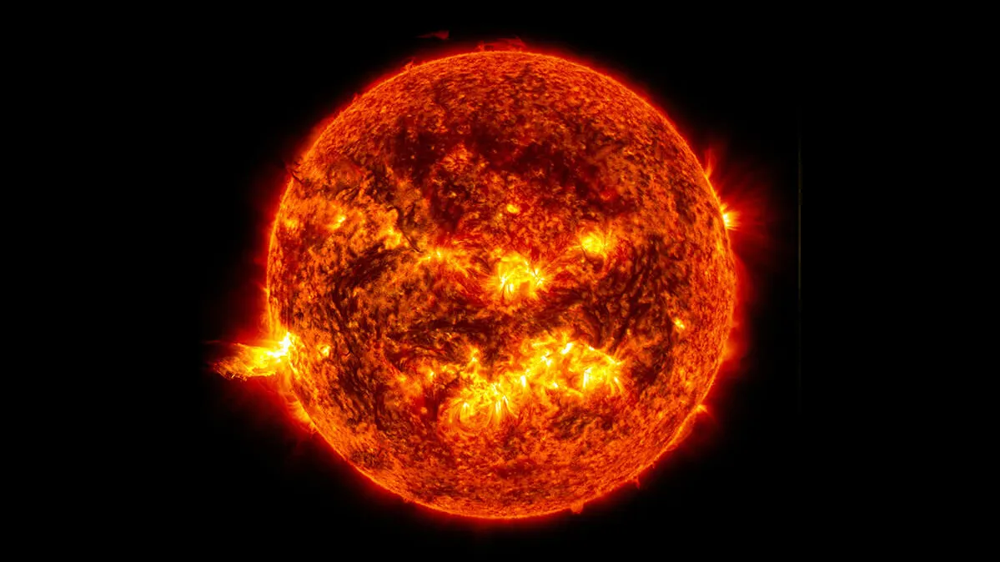

|  | |
| Dati osservati | |
|---|---|
| Distanza media della Terra | 150.000.000 km |
| Luminosità apparente | -26,8m |
| Magnitudine assoluta | 4,8m |
| Caratteristiche fisiche | |
| Diametro | 1.392.000 km |
| (rispetto alla terra) | 109 volte |
| Area della superficie |
6,09 x 1012 km2 |
| Volume | 1,41 x 1027 m3 |
| Temperatura superficiale | 5780 K |